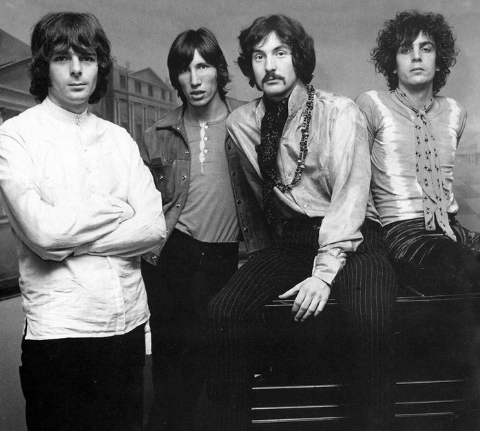
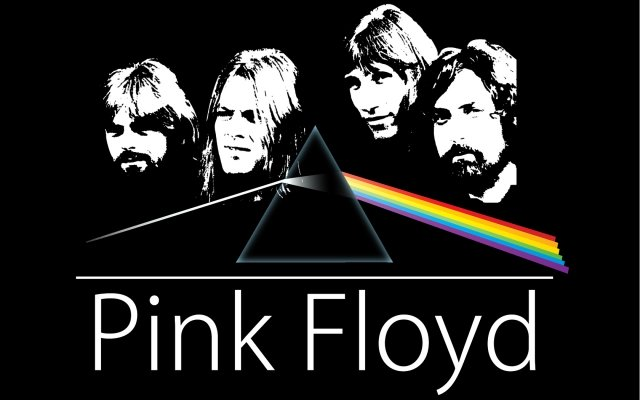
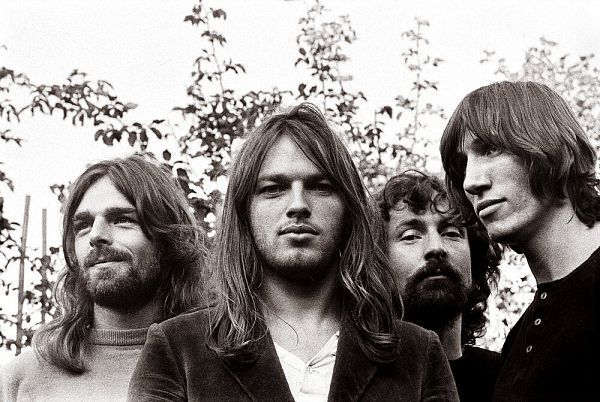

Исполнитель: Pink Floyd
Альбом: The Division Bell
Дата релиза: 28 марта 1994 года
Жанр: Прогрессивный рок
«High Hopes» — финальный трек альбома «The Division Bell», проникновенная песня о ностальгии, потерянных возможностях и неизбежном взрослении. Музыкальный пейзаж дополняется звучанием колокола и философским текстом Дэвида Гилмора.
Культовая британская рок-группа, основанная в 1965 году в Лондоне. Она стала одной из самых влиятельных и коммерчески успешных групп в истории мировой рок-музыки, продав более 250 миллионов альбомов по всему миру.Pink Floyd известны своими философскими текстами, экспериментальным звучанием и грандиозными концертными шоу. Их творчество оказало значительное влияние на развитие прогрессивного рока и оставило неизгладимый след в мировой музыкальной культуре.
  Оформление упаковки сингла High Hopes от Pink Floyd напрямую связано с эмоциональной глубиной и тематическим богатством трека — ностальгией, течением времени, амбициями и утратой.
Визуальная символика:
Типографика и композиция: Сдержанное использование текста позволяет искусству говорить первым. Элегантные шрифты придают оформлению поэтический и вневременной характер — как и наследие самой группы. Лаконичное оформление усиливает чувство одиночества и величественной тишины, перекликаясь с музыкальной и лирической атмосферой High Hopes.
Цвет и настроение: Приглушённые оттенки подчёркивают меланхоличную красоту композиции, а серебряные акценты делают упаковку достойной коллекционного издания — идеально как для давних поклонников, так и для новых слушателей, открывающих для себя наследие Pink Floyd через этот сингл.